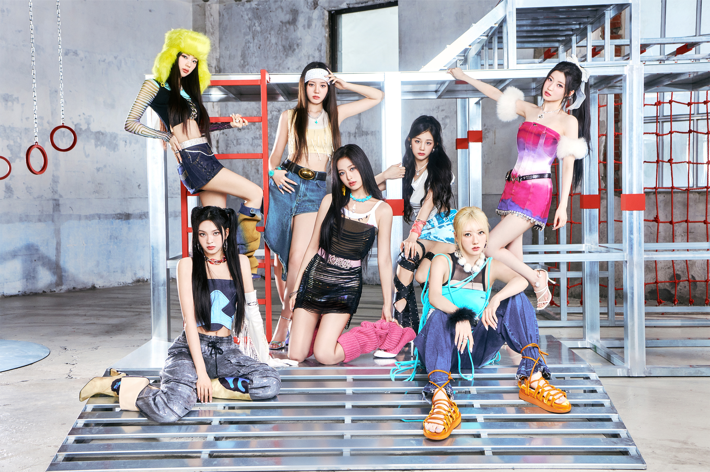

BABYMONSTER
BABYMONSTER is a South Korean girl group under YG Entertainment

From left to right, BabyMonster member Ruka(Yellow Hat), Chiquita(sit), Rora, Ahyeon, Pharita, Rami(sit), Asa
BABYMONSTER (베이비몬스터), also known as BAEMON or BABYMON, is a 7-member South Korean girl group under YG Entertainment. The group consists of Ruka, Pharita, Asa, Ahyeon, Rami, Rora, and Chiquita. They made their long-awaited debut on November 27th, 2023 as a 6-member group only with a digital single, BATTER UP, excluding member, Ahyeon, who was temporarily on hiatus due to health reasons. On April 1st, 2024, they finally appeared as a 7-member group with their first mini album, BABYMONS7ER.
Check out their information from YG Official Website